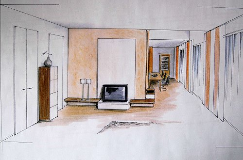

Website durchsuchen:
Guten Tag und herzlich willkommen!
Ein Möbeltischler ist heute mehr als ein Handwerker, der die Anrichte für die Stereoanlage oder den neuen Esstisch baut. Tischler sind heute Einrichtungsberater, die erste Adresse für knifflige Lösungen und Experten für das Schaffen von zusätzlichem Stauraum.
Wir setzen Ihre Wünsche um: individuell, nach Maß, pünktlich und handwerklich perfekt.

Individuelle Möbel sind bleibende Werte, an denen man sich lange erfreuen kann.
Immer wieder hören wir von unseren Kunden, wie sehr sie sich über den schon so lang ersehnten Einbauschrank unter der Dachschräge freuen, in den sie so viele Dinge hinein bekommen. Schiebetürschränke sind derzeit der Renner und nicht nur superschick, sondern auch enorm Platz sparend.Übrigens: Wir sind Profis in Sachen Schiebtüren, auch in Verbindung mit unserer neuen Riefa-Leichtbauplatte. Dieses ökologische Produkt verfügt über beste wärme-und schalldämmende Eigenschaften und ist dabei superleicht. Mehr unter der Rubrik: Riefa-Leichtbauplatte.
Ferner ist der Essbereich mehr denn je in den Mittelpunkt gerückt. Hand aufs Herz- bei den meisten Menschen findet das Leben heute am großen Esstisch in der Küche statt. Kochen ist wieder in, auch zusammen mit den Gästen. Da liegt es doch nahe, den großen Esstisch im Koch-Wohnbereich in Szene zu setzen. Große Tische, bei denen wir voll und ganz auf die Wünsche unserer Kunden eingehen, gehören ebenso zu unseren Leistungen wie die Sitzbank in gerader Form oder auch als Eckbank, damit noch ein paar Gäste mehr Platz finden. Und auch die Küche vom Tischler ist ein durchaus interessantes Thema. Ein Tischler fertigt die einzelnen Schrankmodule genau so, wie sie gebraucht werden, fern ab von Standardmaßen. Individueller geht es kaum!
Wenn auch Sie sich einen lang ersehnten Möbelwunsch erfüllen möchten, nehmen Sie Kontakt mit uns auf. Wir beraten Sie gern und erstellen Ihnen unverbindlich ein detailliertes Angebot.
Lesen Sie dazu auch unseren Tipp zum Thema Steuern sparen, der Einbaumöbel nach Maß noch interessanter macht.
Ihr Tischlermeister
Hans-Martin Leskovsek